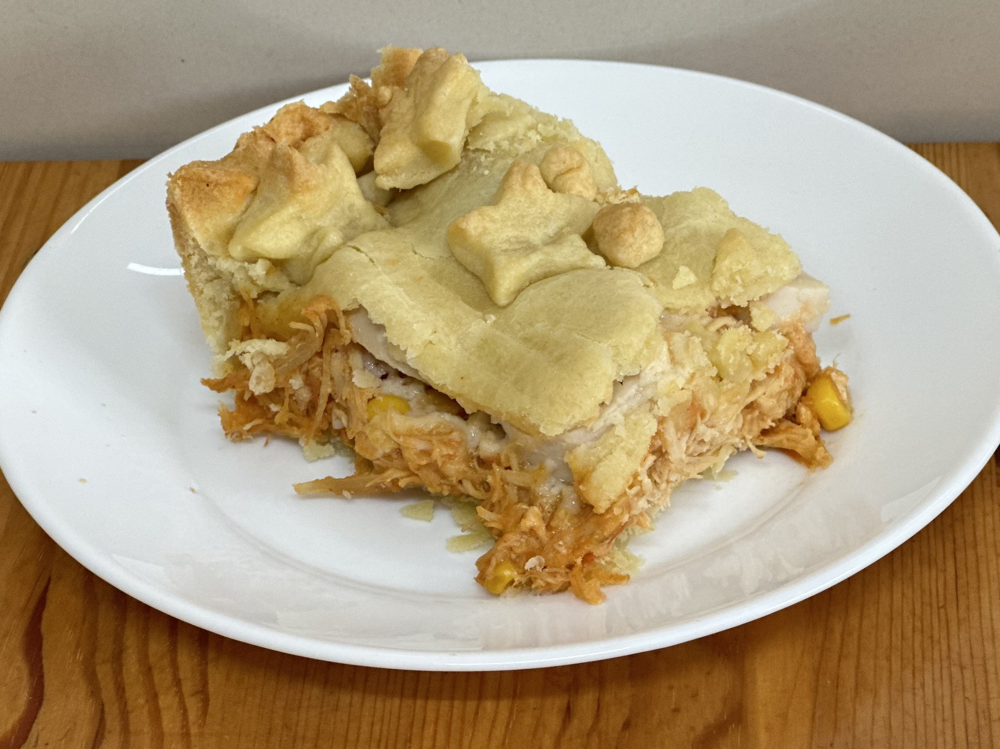

Torta de frango

Ingredientes
Recheio
- 2 colheres (sopa) de azeite (30 ml)
- 1 cebola picadinha (100 g)
- 3 dentes de alho picadinhos
- 500 g de frango cozido desfiado
- 1/2 xícara (chá) de molho de tomate (120 g)
- 1 colher (chá) de colorau (5 g)
- 1 lata de milho (150 g)
- 1 vidrinho de azeitonas descaroçadas picadas (100 g)
- 1 xícara (chá) de leite (250 ml)
- 3 colheres (sopa) de farinha de trigo (50 g)
Massa
- 1 receita de massa podre ou massa semi-podre ou massa de torta com azeite ou massa de torta com iogurte.
Montagem
- 1 ovo batido para pincelar
Modo de preparo
Recheio
- Em uma panela, colocar o azeite, a cebola e o alho e reforgar.
- Juntar o frango, o molho de tomate, o colorau, o milho e a azeitona e cozinhar por alguns minutos.
- A parte, misturar o leite com a farinha até dissolver.
- Adicionar o leite com amido na panela, mexendo sempre, deixar cozinhar por mais 1 minuto e desligar o fogo.
- Levar para gelar antes de usar.
Massa
- Preparar a massa conforme a receita escolhida.
Montagem
- Abrir 2/3 da massa na fôrma, cobrindo bem o fundo e as laterais.
- Dispor o recheio sobre a massa.
- Abrir o restante da massa com um rolo e cobrir a torta.
- Pincelar a superfície da torta com o ovo batido e levar para assar a 180º C por 30 a 45 minutos.
Observações
- Durabilidade: 3 dias em refrigeração.
- Congelamento da torta com a massa crua: 2 meses.
- Congelamento da torta assada: 3 meses.
- Descongelamento: do congelador direto para o forno, a 180º C. Se a fôrma for de vidro, o forno deve estar frio, não pré-aquecido.
- Receita do curso "Torta de frango na marmita" da Eduk.